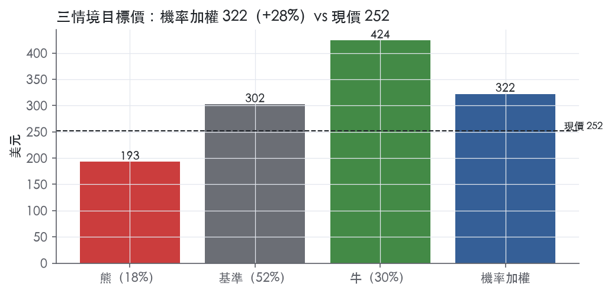
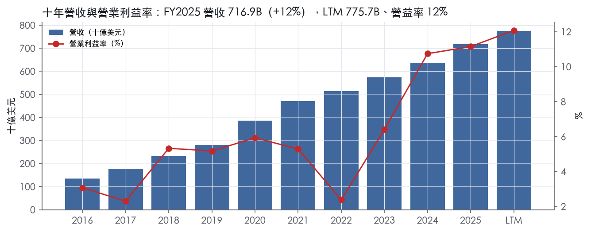
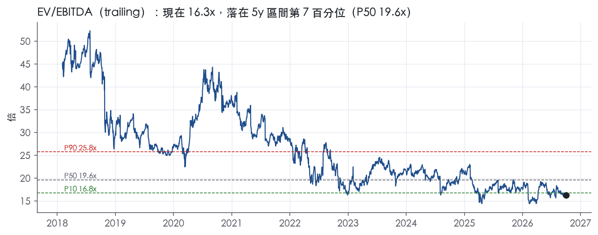
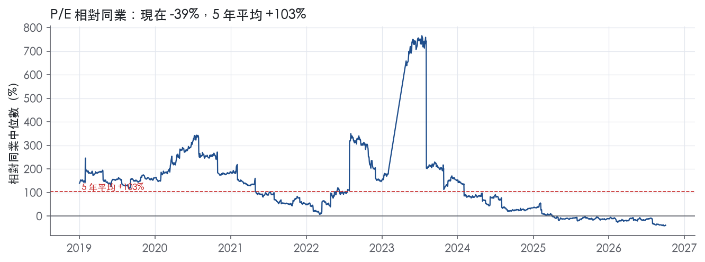
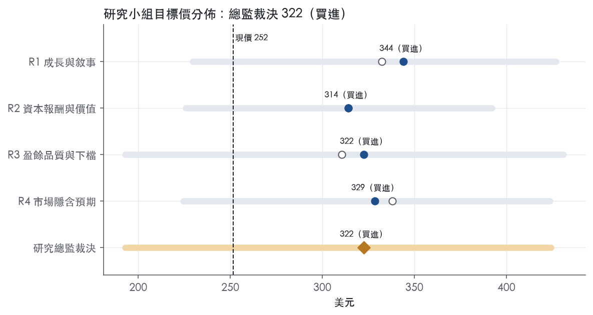
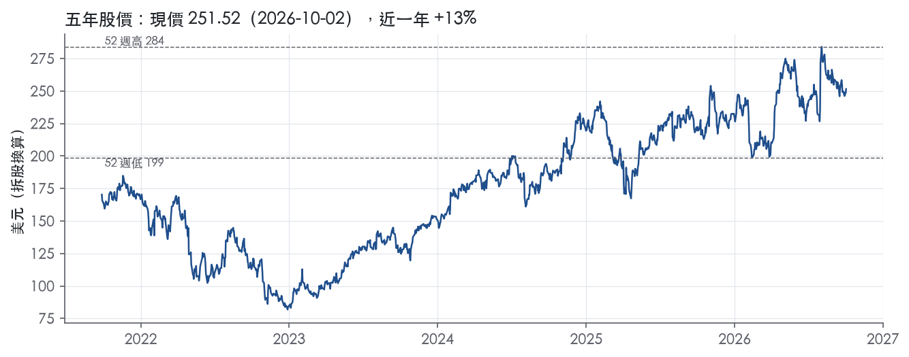

評等總表 › 非必需消費 › AMZN
盈餘上修、倍數持平，看多｜評等 買進｜目標價 322
| 評等 | 買進 |
| 12 個月目標價 | 322 美元 |
| 現價 | 251.52 美元（2026-10-02） |
| 預期報酬 | 股價 +28.2%＋股息 0.0%＝總報酬 +28.2%；同業籃門檻 9.6%，超額 +18.5% |
| 估值方法 | EV/EBITDA 14.3x，套在第 5–8 季的EBITDA（也就是一年後的未來四季） |
| 三情境 | 熊 193／基準 302／牛 424 |
| 研究流程 | 四位研究員兩輪辯論＋研究總監裁決 |
| 資料來源 | SEC EDGAR XBRL、Tiingo、FRED（全免費） |
盈餘上修、倍數持平，看多（研究總監裁決，四位研究員兩輪辯論後）
評等 買進｜12 個月目標價 322 美元（總監三情境機率加權 319 與研究員中位數 326 各半）｜現價 251.52（2026-10-02）
預期報酬：股價 +28.2%＋股息 0.0%＝總報酬 +28.2%。同業籃門檻 9.6%，超額 +18.5%。
估值方法：EV/EBITDA 14.3x，套在第 5–8 季的EBITDA（也就是一年後的未來四季）。三情境：熊 193（18%）／基準 302（52%）／牛 424（30%）。
什麼會讓研究總監改變看法：FY2026Q3 AWS年增跌破30%且2027年資本支出指引高於營收25%，倍數下修至12.4x以下並轉中性；LTM FCF在FY2027上半年轉正且FY2026 ROIC不低於21.4%，基準倍數拉向18x。
| 過去四季（實際，FY2026Q2） | 未來四季 | 第 5–8 季 | 第 9–12 季 | |
|---|---|---|---|---|
| 營收（B） | 775.7B | 884.3B | 990.4B | 1,079.5B |
| 營收成長 | 15.8% | 14.0% | 12.0% | 9.0% |
| 營業利益率 | 12.1% | 13.0% | 13.0% | 13.5% |
| EPS（美元） | 12.44 | 8.31 | 9.26 | 10.42 |
| EPS 成長 | 89.4% | -33.1% | 11.4% | 12.5% |
| 每股股息（美元） | — | 0.00 | 0.00 | 0.00 |
| P/E（現價） | 20.2x | 30.3x | 27.2x | 24.1x |
| 股息殖利率（現價） | — | — | — | — |
過去四季為申報數字；預測為研究總監的假設、程式計算。倍數與殖利率都用現價計算，用來看現價對應各期獲利的高低。
| 情境 | 機率（歷史） | 故事 | 未來四季營收成長 | 第 5–8 季營益率 | 倍數 | 目標價 | 股價漲跌 |
|---|---|---|---|---|---|---|---|
| 熊 | 18%（16%） | 風險表第1、5條：AI需求不如預期、AWS回落，承諾式資本支出與折舊不隨營收縮減致營益率去槓桿、FCF更深；疊加第2條Anthropic評價反轉打在GAAP EPS上，倍數跌破前瞻帶P10 | 10.0% | 9.5% | 11.5x | 193 | -23.3% |
| 基準 | 52%（55%） | AWS 30%以上帶動NTM成長14%、組合效應抵銷新折舊使營益率持平13%，資本密度折價不收窄也不擴大，報酬全來自EBITDA高於機械基準 | 14.0% | 13.0% | 14.3x | 302 | 20.3% |
| 牛 | 30%（29%） | 2027年資本支出指引顯示強度見頂、AWS維持35%以上、LTM FCF於FY2027上半年轉正，市場把倍數移向前瞻帶P50；營益率y2/y3較R4各下修0.5pp以配合D&A 10.5% | 17.0% | 14.5% | 18.0x | 424 | 68.6% |
目標價由程式依研究總監的驅動與倍數計算；機率由研究總監給定。括號內是歷史頻率：把這檔股票過去十年 12 個月報酬的波動形狀，置中在基準情境，結果落在各情境附近的比例。

四位研究員用不同方法各自估值，回應研究總監的質疑後交出第二輪，最後由總監逐點裁決。各研究員的主張見第七章，裁決理由見第八章，完整論證見《研究底稿》。
| 立場（一輪→二輪） | 加權目標價（一輪→二輪） | 評等（一輪→二輪） | 第二輪倍數 | 熊～牛目標價 | |
|---|---|---|---|---|---|
| R1 成長與敘事 | 看多→看多 | 332→344 | 買進→買進 | 17.0x | 229～427 |
| R2 資本報酬與價值 | 看多→看多 | 314→314 | 買進→買進 | 16.5x | 226～392 |
| R3 盈餘品質與下檔 | 看多→看多 | 311→322 | 加碼→買進 | 15.5x | 193～431 |
| R4 市場隱含預期 | 看多→看多 | 338→329 | 買進→買進 | 14.3x | 224～424 |
| 研究總監裁決 | 看多 | 322 | 買進 | 14.3x | 193～424 |
目標價由程式依各自的驅動與倍數計算；評等＝機率加權總報酬 − 同業籃門檻。
Amazon 是一家以電商與雲端基礎設施雙引擎驅動的公司，自我定位為「全球最以客戶為中心的公司」¹。公司以客戶痴迷、發明熱情、營運卓越與長期思維四項原則經營，服務的對象涵蓋消費者、第三方賣家、開發者與企業客戶、內容創作者、廣告主與員工¹。公司將營運劃分為北美、國際與 AWS 三個分部，這是管理層評估業績與管理營運的方式¹。本質上，零售與物流是現金流的規模來源，AWS 則是利潤率與成長敘事的核心。
零售端，Amazon 透過線上與實體商店銷售，涵蓋數十個產品類別、數億種獨特商品，由自營與第三方賣家共同供貨，並自製 Kindle、Fire tablet、Fire TV、Echo、Ring、Blink、eero 等電子裝置，也自製媒體內容¹。訂閱服務以 Amazon Prime 為核心，提供快速免運、串流影音與直播體育賽事等會員權益¹。第三方賣家業務方面，公司不是交易的賣方本人，而是靠固定費用、銷售抽成、單件操作費、利息或其組合收取費用¹。AWS 服務開發者與各規模企業，包括新創、政府機關與學術機構，提供運算、儲存、資料庫、分析、人工智慧與機器學習等隨需技術服務¹。FY2025 全年合併營收 716.92B，年增 12.4%，營業利益率 11.2%，毛利率 50.3%。FY2026Q2 單季，北美分部銷售 116.2B 美元，年增 16%；國際分部銷售 42.2B 美元，年增 15%；AWS 分部銷售 42.2B 美元，年增 37%，為 18 個季度以來最快成長²。北美營業利益 9.1B 美元、國際 1.7B 美元、AWS 16.6B 美元，AWS 單一分部的營業利益已遠超另外兩個分部合計²。AWS 年化營收跑率達 169B 美元²，顯示雲端業務規模已逼近公司整體營收的四分之一，而利潤貢獻占比更高。10-K 未揭露各分部長期毛利率結構，僅在財報附註提供分部營收與營業利益。
公司通路包括官網、行動 App、Alexa、裝置、串流服務與實體商店，訂單履行透過北美與國際自營物流網路、委外與共同外包安排、數位交付及實體店面¹。國際業務對公司營收與利潤具重要性，公司計劃進一步擴張國際市場，但在部分新興市場經驗有限，且可能無法持續獲利¹。公司特別揭露中國與印度的監管限制：在中國透過持有 PRC 牌照的第三方合約關係提供部分技術服務，在印度則因外資零售限制，透過提供行銷工具與物流服務給第三方賣家間接參與市場，並持有 www.amazon.in 市集上一家第三方賣家的間接少數股權¹。中國賣家貢獻公司第三方賣家服務與廣告營收的重要部分，中國供應商也提供顯著比例的零組件與成品，因此關稅政策變化、貿易爭端與地緣政治事件都可能直接衝擊營運結果¹。FY2026Q1 國際分部銷售年增 19%，但扣除匯率影響僅增 11%，顯示匯率是國際分部報表成長的重要推手³。
FY2025Q3 營收 180.17B，年增 13.4%，營業利益率 9.7%，為近八季相對低點（dv/）。FY2025Q4 營收 213.39B，年增 13.6%，營業利益率回升至 11.7%，自由現金流轉正至 14.94B（is/bs/）。FY2026Q1 營收增至 181.5B 美元，年增 17%，剔除匯率影響後年增 15%；北美分部銷售年增 12% 至 104.1B 美元，國際分部年增 19%（匯率中性下年增 11%）至 39.8B 美元，AWS 分部年增 28% 至 37.6B 美元，為 15 個季度以來最快成長³。該季營業利益增至 23.9B 美元（上年同期 18.4B 美元），淨利 30.3B 美元、每股 2.78 美元，其中包含來自 Anthropic 投資的稅前非營業利益 16.8B 美元³。管理層指出廣告業務 TTM 營收突破 70B 美元，晶片業務年化營收跑率超過 20B 美元且以三位數百分比成長³。FY2026Q2 營收 200.6B 美元，年增 20%；北美分部銷售年增 16% 至 116.2B 美元，國際分部年增 15% 至 42.2B 美元，AWS 分部年增 37% 至 42.2B 美元，創 18 個季度最快成長，年化營收跑率達 169B 美元²。該季營業利益達 27.5B 美元，年增 43%；淨利 62.6B 美元、每股 5.75 美元，其中包含來自 Anthropic 投資的非營業稅前其他收益 53.4B 美元²。管理層揭露 AI 業務與晶片業務的年化營收跑率各自超過 25B 美元²。公司同時揭露 TTM 自由現金流轉為流出 7.6B 美元，主因資本支出淨額年增 66.1B 美元，反映 AI 基礎設施投入²。對照資料包，LTM@FY2026Q2 自由現金流為 -11.62B，與新聞稿口徑數字方向一致、口徑略有差異。整體看，過去四季營收成長從雙位數初段加速到 20%，AWS 成長率連續三季加速且是加速主因，但資本支出同步暴增使自由現金流由正轉負，這是當前最大的財務張力。
管理層將 AWS、AI 與晶片業務視為核心成長引擎：CEO Andy Jassy 表示 AWS 在 FY2026Q2 年增 36.7%，是 18 個季度以來最快成長，AI 與晶片業務年化營收跑率雙雙超過 25B 美元²。公司持續押注自研晶片 Trainium 與 Graviton，並取得 Anthropic 與 OpenAI 等 AI 實驗室的多年期、多 GW 級算力承諾²³。零售端策略聚焦極速配送：Prime 會員在上半年同日或次日送達的商品數量成長逾 40%，生鮮與日用品成長速度快於整體業務²；超快配送服務 Amazon Now 已擴展至九個國家、超過 250 個城鎮²。廣告業務本季年增 26%，是另一項管理層強調的成長引擎²。公司也積極布局生成式 AI 代理平台（Bedrock AgentCore）、衛星網路 Amazon Leo、自動駕駛 Zoox 與醫療健康（One Medical、Amazon Pharmacy）等新業務，視為下一階段成長來源²³。整體而言，AWS 加速成長、AI 算力需求與晶片自研，是公司目前對外敘事的三大支柱，零售與廣告則提供現金流與利潤率的穩定基礎。但資本支出暴增已把自由現金流打成負值，顯示 AI 基建投資的回收週期尚未被市場驗證，是觀察下一步能否維持獲利成長的關鍵變數。對 Anthropic 的股權投資公允價值變動已成為每季淨利的重要波動來源，投資人評估 EPS 時需將此非營業項目與核心營運利潤分開看待。

Amazon 的經濟護城河評為寬，趨勢穩定。依據有三項：零售市集的雙邊網路效應、自營履約網路帶來的規模成本優勢，以及 AWS 企業客戶的轉換成本。這三項互相強化，單一競爭者難以同時複製。量化底稿顯示十年 ROIC 平均 30.6%，高於資本成本代理值 10.2%；有資料的 9 年中有 8 年高於資本成本，數字支持長期超額報酬。趨勢不給「變寬」，原因是 AI 基礎設施資本支出急升，新投入資本的報酬率還沒有被驗證。
網路效應是第一來源。公司設計的商店讓數以億計的獨特商品，由公司自己和第三方賣家在數十個品類中銷售¹。公司自承零售業務的主要競爭因素是選品、價格與便利，其中包括快速可靠的履約¹。賣家越多，選品越廣，吸引的消費者越多，又再吸引更多賣家，這個飛輪直接作用在決勝因素上。賣家計畫的收費形式包括固定費用、銷售抽成、單件活動費、利息或其組合¹。公司也向賣家與供應商提供贊助廣告、展示與影音廣告¹。同一份流量因此被多重變現，平台越大，單位流量的變現能力越強。
成本優勢是第二來源。公司透過自己營運的北美與國際履約網路履行訂單¹。截至 2025 年 12 月 31 日，全職與兼職員工約 1,576,000 人¹。這種規模的固定資產與人力可以攤薄單件成本，支撐快速免運這項競爭者難以跟進的承諾。
轉換成本是第三來源，集中在 AWS。公司自承賣家與企業服務的競爭因素，包括客戶改變作業方式的能力與意願¹。AWS 提供運算、儲存、資料庫、分析、人工智慧與機器學習等廣泛的隨需服務¹。客戶的工作負載與資料一旦綁定多項服務，遷移的成本與風險都高。
無形資產只作為輔助來源。公司將商標、專利、營業祕密等智慧財產視為成功關鍵¹。Prime 會員方案涵蓋數千萬項商品的快速免運、影視與直播體育¹。Prime 的黏著度主要來自上述網路效應與履約規模，品牌本身並不足以單獨構成護城河。
數字大致支持寬護城河，但 ROIC 波動偏大，這是必須正面處理的衝突。ROIC 十年平均減資本成本為 20.4%，最新 ROIC 21.4% 仍明顯高於 10.2%。毛利率標準差 4.7%，從最低 35.1% 一路走到最新的 50.3%，反映結構往高毛利的服務、廣告與雲端移動。營業利益率十年平均 5.8%、標準差 2.9%，最新 11.2% 是十年最高。
第一個衝突：ROIC 標準差 13.9%，最低點 6.6%低於資本成本，不符合寬護城河「報酬穩定」的典型樣貌。我們仍維持寬評級，理由有兩點。一是 FY2022 屬於履約產能擴張過頭的錯配，當年毛利率仍有 43.8%，顯示定價權並未流失。二是 ROIC 隔年即回到 18.1%。
第二個衝突：FCF 利潤率最新只有 1.1%，低於十年平均 3.9%，LTM 自由現金流為 -11.62B。這反映的是投資週期，不是競爭壓力造成的獲利侵蝕；但如果持續兩年以上，ROIC 會被分母拖累。
最大的侵蝕因子是 AI 資本支出的回報不確定。FY2025 資本支出占營收 18.4%。公司自承在 AI 等新領域可能無法成功回收投資，而且這些投資的金額往往很大⁴。
第二個因子是 AI 改變導購入口。公司指出網路與 AI 等技術降低了進入門檻、方便消費者比價，讓較小或較不知名的業者更有能力與它競爭¹。網路、系統與服務的營運者可能把客戶導離公司商店，或對存取收費⁴。如果購物決策移到第三方 AI 代理上，市集網路效應的流量優勢會被削弱。
第三個因子是供應鏈與賣家的集中風險。中國賣家占第三方賣家服務與廣告營收的重要部分，關稅與貿易限制可能不利於營運結果⁴。
目標倍數相對零售與雲端同業應給溢價，理由是 ROIC 長期高於資本成本，且三項優勢來源彼此強化。目前 trailing P/E 已低於 5 年 P10 的 29.9x，但 EPS 含 Anthropic 投資的非營業利益，倍數應以核心營業利益為基礎重估，不能直接當成便宜的訊號。溢價幅度應保守，並明確寫入資本支出回報的檢驗點：若 ROIC 跌破資本成本，溢價就要收回。
| 指標 | 最新 | 十年平均 | 標準差 | 最低 | 最高 |
|---|---|---|---|---|---|
| ROIC | 21.4% | 30.6% | 13.9% | 6.6% | 54.8% |
| 毛利率 | 50.3% | 42.5% | 4.7% | 35.1% | 50.3% |
| 營業利益率 | 11.2% | 5.8% | 2.9% | 2.3% | 11.2% |
| FCF 利潤率 | 1.1% | 3.9% | 4.0% | -3.3% | 7.7% |
| ROE | 22.3% | 20.2% | 9.2% | -1.9% | 28.8% |
程式計算。資本成本代理值（10 年債＋5%）：10.2%；ROIC 平均減資本成本：20.4%；ROIC 有資料的 9 年中，高於資本成本 8 年。
LTM 營業現金流／淨利 1.19x 仍在綠燈區，但 FCF／淨利為 -0.09x 紅燈，原因是資本支出暴增而非盈餘灌水。LTM 淨利 77.67B 當中含 Q2 單季 53.4B 的非營業其他收益，主要來自 Anthropic 投資評價，這部分不是經營性現金流來源，必須從「可信盈餘」中剔除²。
核心現金轉換沒有惡化，但 AI 資本支出正在把自由現金流吃光。LTM 營業現金流／淨利 1.19x（近三年平均 2.18x、十年平均 1.35x）顯示營業現金流本身仍健康。但 LTM FCF 為 -11.62B，公司解釋 TTM 自由現金流由上年同期流入 18.2B 轉為流出 7.6B，主要driven by 年增 66.1B 的資本支出淨額，反映 AI 基礎設施投資²。應計比率 LTM -2.6%，遠優於紅線 5.0%，代表淨利沒有靠應計項目灌水。換言之，問題不在盈餘品質本身的「真實性」，而在於盈餘能否轉換成自由現金——目前答案是不能，因為資本開支優先於股東自由現金。
本季最大的 GAAP／經濟現實落差來自投資評價收益，不是傳統的 SBC 或重組費用。新聞稿明確揭露：Q2 淨利 62.6B（每股 5.75 美元）相較去年同期 18.2B（每股 1.68 美元），其中「包含稅前非營業其他收益 53.4B，主要來自 Anthropic 投資」²。這筆收益不是現金、不是經營成果，若不剔除會嚴重高估本季核心獲利能力。新聞稿未單獨揭露本季 SBC、攤銷、重組等傳統非 GAAP 調整項目金額，故無法逐項比對。從量化底稿看，SBC／營收 LTM 2.5%（近三年平均 3.4%、十年平均 2.9%）屬綠燈，規模可控，是真實的員工薪酬成本，應視為營業費用而非一次性項目。
槓桿表上無虞，但資本配置正從「輕資產回饋股東」轉向「重資產自建 AI 基礎設施」。淨負債／EBITDA LTM 僅 0.06x（近三年平均 -0.32x，十年平均 -0.60x），利息保障倍數 28.1x，均為綠燈，顯示付息與舉債能力完全不是限制。但近兩季總債務由 54.96B（FY2025Q3）跳升至 132.55B（FY2026Q2），現金同期從 66.92B 升至 78.21B 後又因資本支出波動（八季表），顯示公司正在主動加槓桿支應 AI 投資。股利加回購占淨利比十年平均為 -220.4%，紅燈，意味著回饋股東資金來源長期靠舉債而非純粹盈餘，但這主要反映 Amazon 本來就不配息、且歷史上曾在虧損年份（如 FY2022 淨利 -2.72B）仍維持資本支出的結構性特徵，而非本期新增異常。稀釋股數年變動 LTM 0.3%、近三年 2.0%，黃燈但幅度小，主要是 SBC 稀釋而非大規模增發。
FCF／淨利 LTM -0.09x（紅燈，近三年平均 0.57x）：真實但多屬資本支出週期性因素，非盈餘造假。公司自己說明 TTM 自由現金流轉為流出 7.6B，主要因資本支出淨額年增 66.1B，用於 AI 基礎設施²。這是資本開支前置、未來產能變現的時間落差問題，不是現金被淨利「借走」的應計操縱——應計比率同期反而是 -2.6%，兩者合看可判斷為真實但非永久性的資本支出壓力，而非盈餘品質造假。
稀釋股數年變動 LTM 0.3%、近三年 2.0%（黃燈）：可解釋為 SBC 稀釋的正常副作用，非紅旗等級問題。十年平均 1.3%，近三年略高但仍遠低於 3.0% 紅線，公司並無大規模現金收購用增發股票支付的證據可見於原文，判斷屬輕微、持續性的員工股權稀釋。
應收帳款成長－營收成長 FY2025 +9.8pp（黃燈）：需留意但未達紅線，且與 AWS／企業客戶付款週期變長的業務結構一致，非立即的盈餘品質警訊。10-K 風險因子提及國際營運有「較短應付、較長應收週期，對現金流有負面影響」的結構性風險⁴，可部分解釋應收成長快於營收，但程式並未提供分部拆解數字佐證，故列為待觀察而非確認紅旗。
（股利＋回購）／淨利十年平均 -220.4%（無燈號但數字異常）：這是 Amazon 長期不配息、且历史上在淨利波動甚至虧損年份（FY2022 淨利 -2.72B）仍持續投入資本支出的結構特徵，不是本期新增的舉債回饋股東訊號，因為八季表與年度表均未見近期有大規模回購（量化底稿無回購金額可供對照），此項目對本期盈餘品質判斷的邊際資訊有限。
估值應該用剔除 53.4B 一次性投資收益後的核心營業利益，而非本季 GAAP 稀釋 EPS 12.44（LTM）或單季 5.75，否則會嚴重高估常態獲利能力。槓桿雖低（淨負債／EBITDA 0.06x）不構成倍數限制，但 FCF 已轉負且資本支出強度持續上升，估值應對 FCF 殖利率給予折價、優先用 EV/EBITDA（現為 16.1x）或 EV/Sales 錨定，而非 P/FCF（目前 370.1x，無意義）。整體盈餘品質可信但「現金含金量」正被 AI 資本週期稀釋，建議對短期自由現金流貢獻打折，但不需對核心營業利益大幅打折。
| 項目 | LTM | 近三年 | 十年 | 燈號 | 規則 |
|---|---|---|---|---|---|
| 營業現金流／淨利 | 1.19x | 2.18x | 1.35x | 綠 | ≥1.00x 綠、<0.80x 紅 |
| 自由現金流／淨利 | -0.09x | 0.57x | 1.88x | 紅 | ≥0.90x 綠、<0.60x 紅 |
| 應計比率（(淨利−CFO)／平均總資產） | -2.6% | -9.8% | -11.4% | 綠 | ≤0.0% 綠、>5.0% 紅 |
| SBC／營收 | 2.5% | 3.4% | 2.9% | 綠 | ≤3.0% 綠、>8.0% 紅 |
| 淨負債／EBITDA | 0.06x | -0.32x | -0.60x | 綠 | ≤1.50x 綠、>3.00x 紅 |
| 利息保障倍數（營業利益／利息） | 28.1x | 25.1x | 13.9x | 綠 | ≥8.00x 綠、<3.00x 紅 |
| 稀釋股數年變動 | 0.3% | 2.0% | 1.3% | 黃 | ≤0.0% 綠、>3.0% 紅 |
| （股利＋回購）／淨利 | — | — | -220.4% | — | ≥50.0% 綠、<0.0% 紅 |
| 應收帳款成長 − 營收成長（FY2025） | +9.8pp | — | — | 黃 | ≤5pp 綠、>15pp 紅 |
| 存貨成長 − 營收成長（FY2025） | -0.4pp | — | — | 綠 | ≤5pp 綠、>15pp 紅 |
程式計算；燈號以 LTM（無則近三年平均）判定。
| 風險 | 觸發指標（看什麼數字、在哪裡看） | 對 EPS 的影響方向與粗略幅度 | 未來 12 個月發生機率（高／中／低） | 出處 |
|---|---|---|---|---|
| AI 資本支出暴增但 FCF 轉負，投資回收不確定 | 每季財報的「purchases of property and equipment, net」與 FCF（新聞稿揭露）；LTM FCF | 方向：負向，幅度中大；資本支出淨額年增 66.1B 美元，LTM FCF 由 +18.2B 轉為 -7.6B | 高 | 8-K 財報新聞稿（2026-07-30） |
| Anthropic 投資公允價值變動扭曲 GAAP 淨利/EPS | 每季新聞稿「non-operating pre-tax other income」金額 | 方向：雙向、幅度大；FY2026Q1 認列 16.8B、FY2026Q2 認列 53.4B 非營業利益，若公允價值反轉會同等幅度侵蝕 EPS | 高 | ³² |
| 反壟斷／消費者保護訴訟與監管調查（FTC、州檢察長） | 法律訴訟揭露、10-K Item 3、FTC 公告、和解或禁制令 | 方向：負向，幅度未定（原文僅質性描述，未附金額） | 中 | 10-K 年報 FY2025 Item 1A（風險因素） |
| 關稅政策變化衝擊中國供應商與第三方賣家成本結構 | 美國/中國關稅公告日期、中國賣家佔第三方服務與廣告營收比重（原文未附具體百分比） | 方向：負向，幅度「大／小」不明，原文未給數字 | 中 | 10-K 年報 FY2025 Item 1A（風險因素） |
| AWS 成長放緩或 AI 需求不如預期，拖累公司整體營業利益率 | 每季 AWS 分部營收年增率、AWS 年化營收跑率（新聞稿揭露） | 方向：負向，幅度大；AWS FY2026Q2 營業利益 16.6B 已超過北美＋國際合計 10.8B，占比若回落將直接壓低合併營益率 | 中 | 8-K 財報新聞稿（2026-07-30） |
資本支出暴增、FCF 轉負是目前最具體、最可監測的風險。公司自己在新聞稿揭露：LTM 自由現金流由上年同期流入 18.2B 美元轉為流出 7.6B 美元，主因是資本支出淨額年增 66.1B 美元，公司明確說明這是為了投資人工智慧基礎設施²。資料包同期 LTM FCF 為 -11.62B，方向一致。這條風險的殺傷力在於：如果 AI 算力需求不如預期兌現為營收（例如 Trainium、晶片業務的三位數成長率放緩），公司已經投入的資本支出變成沉沒成本，ROIC 會被拖累，而目前市場給的 EV/Sales 3.5x（分位 73.2%，band.ev_sales）已經隱含高成長預期，一旦兌現不如預期，估值與盈餘品質會同時被打折。觸發指標很乾淨：每季新聞稿的資本支出淨額與 FCF 數字，不需要猜測。
Anthropic 投資公允價值波動是第二大風險，因為它已經實質上主導了近兩季的 GAAP 淨利變化方向，卻與核心零售、雲端營運完全無關。FY2026Q1 認列非營業稅前其他收益 16.8B 美元，FY2026Q2 再認列 53.4B 美元，均「主要來自對 Anthropic 的投資」³²。這類公允價值變動是雙向的：如果 Anthropic 估值在私募市場或下一輪融資中下修，公司可能認列對等幅度的非營業損失，直接打在 GAAP EPS 上，而且金額級距已經證明可以達到數十億美元。投資人若把這部分當作「核心盈餘成長」計入估值，是危險的錯誤。監測方式是每季新聞稿固定揭露的「non-operating pre-tax other income」這一行。
反壟斷與消費者保護訴訟是公司自己列為重大風險的既有事項，10-K 明確寫「我們正在應訴多項涉及價格操縱、壟斷與消費者保護的訴訟，包括州檢察長與 FTC 提出的訴訟」⁴，且解決方式可能包含「要求支付重大未來款項、禁止我們提供某些產品或服務、要求我們以對業務重大不利的方式改變商業實務」⁴。原文沒有給出具體金額或機率，我們不自行編造數字，但這類訴訟一旦出現不利判決或同意令，會直接限制 AWS 或 Prime 的商業模式，影響不是一次性費用而是結構性的。
關稅政策與中國供應鏈風險也是公司原文主動點名的項目：「由於中國賣家佔我們第三方賣家服務與廣告收入的重要部分，中國供應商也提供顯著比例的零組件與成品，監管與貿易限制、關稅政策變化與貿易爭端……可能對我們的營運結果產生不利影響」⁴。原文未揭露具體佔比百分比，業務概況章同樣只說「重要部分」沒有量化數字，因此這裡無法寫出幅度，只能標示方向。觸發指標是美中關稅公告的時間點與稅率變動，這是可觀測的政策事件。
AWS 成長放緩風險排在最後，因為目前趨勢是加速而非放緩——FY2026Q2 年增 36.7%，是 18 個季度最快²——但正因為市場已經把高成長進倍數，任何放緩都是非線性的負面衝擊。AWS 單季營業利益 16.6B 美元已經超過北美（9.1B）與國際（1.7B）分部合計²，意味著公司合併營益率高度依賴 AWS 的持續擴張，一旦 AWS 營收年增率從 37% 回落到過去常態區間（10–20% 級別，參照 FY2024–FY2025 年度數據），合併營業利益率會明顯承壓。
現價 251.52 對應 trailing（過去四季）P/E 20.2x、EV/EBITDA 16.1x、EV/EBITA 29.0x、EV/Sales 3.5x、FCF 殖利率 -0.4%。主要估值倍數 EV/EBITDA 現在 16.3x，落在5 年區間第 7 百分位（P10／P50／P90 = 16.8x／19.6x／25.8x）。

把程式的機械基準預測放到現價下，市場付的前瞻倍數是：EV/EBITDA（未來四季） 14.3x、P/E（未來四季） 33.1x、EV/EBITDA（第 5–8 季） 13.1x、P/E（第 5–8 季） 30.5x。反推 DCF 顯示市價隱含未來五年營收年成長 150.0%（WACC 9.0%、終值成長 3.0%、FCF 利潤率 -2.8%，SBC 不加回）。
| 倍數 | 現在 | 5 年 P10 | 5 年 P50 | 5 年 P90 | 現在分位 | 全期 P50 |
|---|---|---|---|---|---|---|
| P/E | 20.2x | 29.9x | 50.4x | 108.8x | 0.8% | 79.4x |
| EV/EBITDA | 16.3x | 16.8x | 19.6x | 25.8x | 6.8% | 24.2x |
| EV/EBITA | 29.4x | 30.2x | 49.1x | 83.3x | 6.7% | 64.1x |
| EV/EBIT | 29.4x | 30.2x | 49.1x | 83.3x | 6.7% | 65.1x |
| EV/Sales | 3.5x | 2.1x | 3.2x | 3.8x | 73.2% | 3.5x |
| P/S | 3.5x | 2.1x | 3.3x | 3.8x | 67.8% | 3.5x |
| P/FCF | 370.1x | — | — | — | — | 63.6x |
trailing 倍數（股價 ÷ 過去四季）；分位以每個交易日計算。
同業籃：GOOGL, META, MSFT, WMT, COST, SHOP（手動名單（playbooks/peers.yaml））。評等門檻 9.6%：同業「倍數不變下持有一年」的隱含報酬中位數（＝ FCF 殖利率 ×(1＋g)＋g，g 為 5 年營收年複合成長並夾在 −2%～8%），每家夾在 0～15%、P/E 低於 5 倍視為資料可疑而排除，中位數再限制在 10 年債到 10 年債＋5% 之間。
| 代號 | 市值 | 5 年營收 CAGR | 營益率 | ROIC | P/E | 5 年 P/E 中位數 | EV/EBITDA | P/FCF | 隱含報酬 |
|---|---|---|---|---|---|---|---|---|---|
| AMZN | 2,712.1B | 13.2% | 12.1% | 21.4% | 20.2x | 50.4x | 16.1x | — | 13.3% |
| GOOGL | 4,201.0B | 17.2% | 33.1% | 37.0% | 17.3x | — | 23.4x | 78.9x | 9.4% |
| META | 1,868.3B | 18.5% | 38.1% | 35.7% | 27.5x | 26.6x | 17.0x | 45.6x | 10.4% |
| MSFT | 3,843.7B | 14.6% | 46.8% | 35.9% | 28.8x | 33.8x | 19.6x | 57.4x | 9.9% |
| WMT | 831.8B | 5.0% | 4.4% | 17.7% | 37.7x | 38.5x | 18.4x | 61.6x | 6.7% |
| COST | 408.3B | 10.5% | 3.8% | 40.9% | 46.3x | 50.6x | 28.6x | — | 10.3% |
| SHOP | 196.5B | 31.6% | 13.9% | — | 102.3x | — | — | 83.5x | 9.3% |
| 同業中位數 | 15.9% | 23.5% | 35.9% | 33.2x | 36.1x | 19.6x | 61.6x | 9.6% |
全部 trailing，程式以各公司 SEC XBRL 與 Tiingo 行情計算；第一列為本檔。
P/E 相對同業中位數：現在 -39.2%，過去 1 年平均 -18.1%、3 年 28.1%、5 年 103.2%；EV/EBITDA 相對同業中位數：現在 -17.1%，過去 1 年平均 -17.1%、3 年 -3.8%、5 年 —。

事後實現前瞻倍數帶（EV/EBITDA，2018-08-17..2025-08-15）：P10／P50／P90 = 12.4x／19.3x／30.0x。它是每個交易日的股價除以之後四季實際實現的指標；一年後，今天的第 5–8 季正是那時的未來四季，所以這條帶是 12 個月目標價的同口徑倍數。因為用的是事後實際而非當時預期，過去成長超乎預期的公司這條帶會偏低。
程式的機械基準（成長率從過去四季年增率三年收斂到 6%、利潤率持平）用 事後實現前瞻 EV/EBITDA P50 估值得到 364（44.9%），市場現行前瞻倍數（現價 ÷ 基準 未來四季指標）一年後持平，套在基準 第 5–8 季指標得到 269。這兩個數字只是參考點，不是本報告的目標價；研究員對這個定價的回應在第七章。
下表是每位研究員第一輪（各自獨立）與第二輪（回應研究總監的質疑後）的結果。目標價全由程式依各自的假設計算。
| 立場（一輪→二輪） | 加權目標價（一輪→二輪） | 評等（一輪→二輪） | 第二輪倍數 | 熊～牛目標價 | |
|---|---|---|---|---|---|
| R1 成長與敘事 | 看多→看多 | 332→344 | 買進→買進 | 17.0x | 229～427 |
| R2 資本報酬與價值 | 看多→看多 | 314→314 | 買進→買進 | 16.5x | 226～392 |
| R3 盈餘品質與下檔 | 看多→看多 | 311→322 | 加碼→買進 | 15.5x | 193～431 |
| R4 市場隱含預期 | 看多→看多 | 338→329 | 買進→買進 | 14.3x | 224～424 |
| 研究總監裁決 | 看多 | 322 | 買進 | 14.3x | 193～424 |
目標價由程式依各自的驅動與倍數計算；評等＝機率加權總報酬 − 同業籃門檻。
分歧度：第一輪 加權目標價 311～338（區間＝現價的 11%）· 倍數 14.5～17x · 立場 看多×4（方向一致）；第二輪 加權目標價 314～344（區間＝現價的 12%）· 倍數 14.3～17x · 立場 看多×4（方向一致）。

| 研究員 | 第二輪主張 | 堅持的理由 |
|---|---|---|
| R1 成長與敘事 | 看多，倍數17倍，收回過去一年的一部分個股折價。 | 不因應收帳款紅旗下修成長；營業現金流年增33%，現金轉換沒有卡住。 |
| R2 資本報酬與價值 | 溫和看多，倍數16.5倍，押倍數不再收縮。 | 不回到19.6倍：資本支出佔營收22.3%，而且改由舉債支應。 |
| R3 盈餘品質與下檔 | 溫和看多，倍數15.5倍，利潤是真的，現金被資本支出吃掉。 | 投入資本報酬率21.4%遠高於FY2022的6.6%，倍數不該貼近下緣。 |
| R4 市場隱含預期 | 看多，倍數14.3倍持平，市場低估未來一年成長。 | AWS加速不受Prime Day移檔影響，未來一年成長14%高於市場的12.5%。 |
每位研究員的逐條回應與完整論證見《研究底稿》（AMZN_研究底稿_2026-10-05.docx）。
| 分歧點 | R1 | R2 | R3 | R4 | 什麼資料會分出勝負 |
|---|---|---|---|---|---|
| 目標倍數（一年後的前瞻倍數） | 17x@ntm，回到 1y P50 下方 | 16.5x@ntm，不再收縮 | 15.5x@q5_q8，P25–P50 之間 | 14.3x@q5_q8，市場持平 | 2027 年資本支出指引（2027-02）；FY2027Q1 後 trailing 是否守住 1y P10 15.2x |
| Q5–Q8 營收成長 | 12% | 10%，一季不外推 | 12% | 12%，規模實現區間內 | FY2026Q4 AWS 年增率與承諾揭露 |
| 營益率與 D&A | 13.5／14／14.5，D&A 10.3% | 12.5% 持平，D&A 10.5% | 13／12.5／13，D&A 10.5% | 13.4／13.8／14，D&A 10.0% | FY2026Q3、Q4 營益率對基期 9.7%／11.7% 的擴幅 |
| 資本支出強度 | 22.3% | 23% | 24% | 23% | 2027 年資本支出指引 |
| 熊情境深度 | 14x，無風險表 | 13.5x，無風險表 | 11.5x，風險表第 1、5 條 | 12.4x，自訂機制 | FY2026Q3 Anthropic 評價方向、AWS 是否跌破 30% |
倍數：選 R4。 換算到同一口徑，四人相對市場持平倍數是 R1 +4%、R2 +1%、R3 +8%、R4 0%（第二輪檢查表），爭的是一年內有沒有重估。證據不支持：AMZN 對同業 EV/EBITDA 折價現在 −17.1%、1 年平均 −17.1%、3 年平均 −3.8%（同業表）——折價是個股的，但過去 12 個月已停止擴大，即使資本支出／營收從 FY2025 的 18.4%升到 LTM 22.3%；沒有再收縮的證據，也沒有收窄的證據。窗內唯一有日期的催化是 2027 年資本支出指引（FY2026Q4 財報，2027 年 2 月），方向兩面；FCF 轉正連 R3 的主張二都放在 FY2026Q4 之後。R3 證明了折價來自現金轉換（FCF 利潤率 1.1% 對十年 3.9%，護城河章），且 ROIC 21.4%遠高於形成前瞻帶低點的 FY2022 6.6%，所以不該貼 P25——但市場持平 14.3x 已在 P25 14.1x 之上（估值劇本），他沒有回答「一年內為何要比現在再高 8%」。R1 的 1y P50 形成於資本支出強度較低的時期，回去需要事件；R2 的 16.5x@ntm 實質等於持平，我採納他「不再收縮」的可證偽寫法。口徑：劇本主尺是 ebitda@ntm_plus_1，用 q5_q8 配事後實現前瞻帶，14.3x 即程式的市場持平參考點；低於 P50 19.3x 全是個股因素，不是利率，四人第二輪都已拿掉利率。
Q5–Q8 成長：選 R4。 12% 落在公司自己在 575B–717B 規模的實現區間 11.0%–12.4% 內（–FY2025），不需要例外；撐在上緣的是 R2 看不到的材料：OpenAI 約 2GW 於 2027 年爬坡、Anthropic 最多 5GW³，AI 與晶片業務跑率各超過 25B 美元且三位數成長²，時點正落在 Q5–Q8。R2 引用 Q1 國際分部剔匯率僅增 11%³，那是 Q2 銷售 42.2B 美元、對合併 200.6B 美元佔比有限的分部²；「一季不外推」也不成立，AWS 從 Q1 28% 到 Q2 37% 是連續加速。NTM 取 14%（R2、R3、R4）而非 R1 的 14.5%：Prime Day 2026 移到 6 月，LTM 含兩次、NTM 只含一次（R4 E1），R1 沒有扣減。Q9–Q12 取 R4 的 9%，不影響 Q5–Q8 目標價；WMT 在相近規模的 5 年 CAGR 僅 5.0%（同業表），10% 我不給。
營益率與 D&A：own。 D&A 取 10.5%（R2、R3）：資本支出 23% 對基準 D&A 9.7%，折舊只會往上，R4 的 10.0% 是我第一輪對其他三人指出的同一個不一致。y1 取 R3 的 13.0%：FY2026Q1、Q2 已是 13.1%、13.7%（Q2），基期是 FY2025Q3 9.7%、Q4 11.7%（Q4），不要求每季超過 Q2；R1 的 13.5% 依他自己的 G2 對帳要四季在高基期上同幅擴張，R2 的 12.5% 低於已做到的兩季。y2 不取 R3 的 12.5%：他假設新折舊吃掉 0.5pp 而無抵銷，但 AWS 營業利益從 10.2B 增至 16.6B 美元、增幅大於其營收 37% 的增速，已超過北美 9.1B 加國際 1.7B 的合計，且 AWS 年增 37% 對北美 16%、國際 15%²，組合效應在 Q5–Q8 持續，我讓它恰好抵銷折舊，持平 13.0%；y3 13.5%。R1 的 14.0%、R4 的 13.8% 要求組合效應在資本支出仍高於 D&A 之下淨贏近 1pp，那是牛情境。我的 Q5–Q8 EBITDA 率因此落在 R2／R3 與 R4 之間。
資本支出：選 R2，23%。 TTM 資本支出淨額年增 66.1B 美元²，Q2 FCF 流出由 −18.17B 收窄至 −8.82B（Q2）不是降速，多 GW 承諾 2027 年才爬坡。R3 的 24% 靠同一組證據無增量；R1 沿用 22.3% 等於假設增幅到此為止。總債務由 54.96B 升至 132.55B（FY2026Q2）證實改由舉債支應，但淨負債 9.56B仍低，不構成倍數約束。
熊情境：選 R3。 只有 R3 看得到風險章，也只有他把熊情境對應到風險表第 1 條（資本支出暴增、FCF 轉負）與第 5 條（AWS 放緩拖累合併營益率）；機制自洽：GW 級承諾的資本支出不隨營收縮減，營收降檔時 D&A 與資本支出比率同升、營益率去槓桿。11.5x 跌破前瞻帶 P10 12.4x，對應 FY2021–22 那種 FCF 為負（−14.73B、FY2022 −16.89B）加 ROIC 6.6% 的組合。R1、R2 無風險表對應，R4 的 12.4x 剛好在 P10，尾巴不夠深。
漂移：無退回。 R3 向中位數靠攏 55%，來源是我的 Q1（ROIC fact id 量化）與 Q4（刪利率），皆附證據；R4 的 −2.8% 來自 E1（4/29 新聞稿 Prime Day 移檔）與 E3（規模基準率），是新證據；R1 遠離中位數，R2 無變動。R3 的機率 25／55／20 對歷史 32／54／14 偏熊，理由已在他的熊情境驅動內，我不採納這個傾斜。
與機械基準不同的驅動（皆為假設）：rev_growth_y1 14.0%（基準 12.5%）——Q1 剔匯率年增 15% 不含 Prime Day³，其後 AWS 再加速到 37%，扣掉 NTM 少一次 Prime Day 的基期效應；rev_growth_y2 12.0%（基準 9.3%）、rev_growth_y3 9.0%（基準 6.0%）；op_margin 13.0%／13.0%／13.5%（基準 12.1% 持平）；da_pct_rev 10.5%（基準 9.7%）；capex_pct_rev 23.0%（基準 22.3%）。SBC、稅率、股數沿用基準。
目標倍數 14.3x EV/EBITDA，套在 Q5–Q8，EV 基準減 NTM 期末淨負債。錨是基準模型的「市場倍數持平參考點」14.3x，略高於事後實現前瞻帶 P25 14.1x、遠低於 P50 19.3x（估值劇本）。相對同業維持對中位數 19.6x 約 −17% 的折價（同業表），理由是現金轉換——LTM FCF −11.62B 對 EBITDA 168.91B（ltm.fcf）——與舉債支應，不是類股重估，同業 P/E 都貼在各自 5 年中位數（同業表）。現價 trailing 16.3x 在 1y 帶 24.6 分位、5y 帶 6.8 分位（band.ev_ebitda）：裁決是這個折價一年內既不收窄也不再擴大。
| 情境 | 機率 | 來源 | 營收 y1／y2／y3 | 營益率 y1／y2／y3 | 其他 | 倍數 |
|---|---|---|---|---|---|---|
| 牛 | 30% | R4，營益率 y2／y3 各 −0.5pp | 17%／14%／11% | 14.0%／14.5%／15.0% | 沿用基準 | 18x |
| 基準 | 52% | 總監 | 14%／12%／9% | 13.0%／13.0%／13.5% | D&A 10.5%、資本支出 23% | 14.3x |
| 熊 | 18% | R3 | 10%／7%／6% | 11.0%／9.5%／10.0% | D&A 11%、資本支出 25% | 11.5x |
牛取 R4：2027 年資本支出指引顯示強度不再上升、AWS 維持 35% 以上、LTM FCF 於 FY2027 上半年轉正，市場把倍數移向前瞻帶 P50 19.3x；18x 不到 P50，因 FCF 利潤率仍遠低於十年平均 3.9%。R4 的 D&A 是 10.0%、我的是 10.5%，營益率 y2／y3 各下修 0.5pp 以維持他原本的 EBITDA 率，避免 D&A 差異機械性墊高牛情境。熊取 R3，對應風險表第 1、5 條，再疊加第 2 條：Anthropic 評價收益（Q1 16.8B、Q2 53.4B³²）反轉會同幅打在 GAAP EPS 上，放大倍數的懲罰。
機率從歷史基準率出發：置中分布上行 ≥+10% 佔 38%、下行 ≤−10% 佔 33%，牛本來就高於熊；本研究部過去 22 份報告熊皆高於牛，這份不延續。對照程式依我的情境距離算出的頻率，預期偏離都在 5pp 內：熊 18% 略高於機械對照，因為風險表第 1 條正在發生（LTM FCF 已轉負、三季內總債務由 54.96B 升至 132.55B）、第 2 條兩季內已認列的評價收益隨時可反轉；牛 30% 不往下壓，因為基準情境不含任何重估，而現價在 5y 帶 6.8 分位，倍數向上的空間大於向下。
若市場如基準模型所描述（讀法 A）只付 12.5% NTM 成長與 12.1% 持平營益率，我們的差距全在盈餘：NTM 成長 14% 對 12.5%、Q5–Q8 成長 12% 對 9.3%、營益率 13% 對 12.1%，差在 AWS 的加速與組合效應，倍數不動。若市場已預期這條盈餘路徑、只是因資本密度付較低倍數（R4 的讀法 B），差距就在倍數：14.3x 套在較高的 EBITDA 上是小幅重估，押的是 −17.1% 折價不再擴大，由主張五檢驗。立場看多與程式評等一致：報酬來源是 EBITDA 高於機械基準，門檻 9.6% 由同業隱含報酬決定，無股利因素。
現價 251.52 → 點估目標價 302 → 機率加權目標價 319 → 目標價 322，差距拆成五段：成長順延 +18 美元（市場現行倍數 14.3x 一年後持平、獲利照機械基準）；倍數差 -0 美元（總監倍數 14.3x vs 市場持平倍數 14.3x，同一機械基準預測）；盈餘差 +33 美元（總監預測的第 5–8 季EBITDA 232.7B vs 機械基準 207.6B，同一倍數）；情境不對稱 +17 美元（機率加權減點估）；研究小組平均 +3 美元（總監機率加權 319 與研究員第二輪中位數 326 各半）。各段相加等於目標價減現價。本階段未接賣方共識，差距以市場隱含預期為對照。
| 驅動 | 機械基準 | 研究總監 | 差異 |
|---|---|---|---|
| 未來四季營收成長 | 12.5% | 14.0% | +1.5 pp |
| 第 5–8 季營收成長 | 9.3% | 12.0% | +2.7 pp |
| 第 9–12 季營收成長 | 6.0% | 9.0% | +3.0 pp |
| 未來四季營益率 | 12.1% | 13.0% | +0.9 pp |
| 第 5–8 季營益率 | 12.1% | 13.0% | +0.9 pp |
| 第 9–12 季營益率 | 12.1% | 13.5% | +1.4 pp |
| D&A／營收 | 9.7% | 10.5% | +0.8 pp |
| 資本支出／營收 | 22.3% | 23.0% | +0.7 pp |
| SBC／營收 | 2.5% | 2.5% | ＝ |
| 稅率 | 19.0% | 19.0% | ＝ |
| 股數年變動 | 0.9% | 0.9% | ＝ |
研究總監只寫偏移，未寫的沿用基準。
| 期 | 營收 | 成長 | 營益率 | 營業利益 | EBITDA | EBITA | 淨利 | EPS | FCF | 期末淨負債 |
|---|---|---|---|---|---|---|---|---|---|---|
| 未來四季 | 884.3B | 14.0% | 13.0% | 115.0B | 207.8B | 115.0B | 90.5B | 8.31 | 1.9B | 7.6B |
| 第 5–8 季 | 990.4B | 12.0% | 13.0% | 128.8B | 232.7B | 128.8B | 101.6B | 9.26 | 2.5B | 5.1B |
| 第 9–12 季 | 1,079.5B | 9.0% | 13.5% | 145.7B | 259.1B | 145.7B | 115.4B | 10.42 | 7.3B | -2.2B |
程式依上表的驅動計算；季度用最近四季季節性分攤；不含營運資金變動。
估值方法：EV/EBITDA 14.3x，套在第 5–8 季的EBITDA（也就是一年後的未來四季）。研究總監目標倍數的錨：基準模型「市場倍數持平參考點」14.3x，略高於事後實現前瞻帶P25 14.1x、遠低於P50 19.3x；維持對同業中位數19.6x約-17%的折價，理由是現金轉換與舉債支應（個股因素），一年內既不收窄也不再擴大。
計算：EBITDA（第 5–8 季） 232.7B × 14.3x＝EV 3,328.2B，減未來四季期末淨負債 7.6B＝權益價值 3,320.6B，除以第 5–8 季的股數 → 點估目標價 302（20.3%）；隱含 P/E（未來四季）36.4x、P/E（第 5–8 季）32.7x、EV/EBITDA（第 5–8 季）14.3x、FCF 殖利率（第 5–8 季）0.1%。
總監三情境機率加權目標價 319，研究員第二輪中位數 326，兩者各半＝目標價 322；預期報酬 股價 +28.2%＋股息 0.0%＝總報酬 +28.2%；減評等門檻 9.6%（同業籃隱含報酬中位數（GOOGL, META, MSFT, WMT, COST, SHOP））＝超額報酬 +18.5% → 評等 買進（超額 >+15% 買進、+5～+15% 加碼、±5% 中立、−5～−15% 減碼、<−15% 賣出）。同一份資料重開研究小組，超額約有正負四個百分點的雜訊（一個標準差，二十檔實測）；以此估計，評等落在其他級距的機率約二成。
| 情境 | 機率 | 未來四季成長 | 第 5–8 季成長 | 第 5–8 季營益率 | EBITDA（第 5–8 季） | 倍數 | 目標價 |
|---|---|---|---|---|---|---|---|
| 熊 | 18% | 10.0% | 7.0% | 9.5% | 187.2B | 11.5x | 193 |
| 基準 | 52% | 14.0% | 12.0% | 13.0% | 232.7B | 14.3x | 302 |
| 牛 | 30% | 17.0% | 14.0% | 14.5% | 258.7B | 18.0x | 424 |
| 主張 | 驗證日 | 看哪個數字 | 門檻 |
|---|---|---|---|
| FY2026Q3 AWS分部營收年增維持30%以上（不受Prime Day移檔影響） | 2026-11-06 | AWS segment net sales YoY（新聞稿） | >=30% |
| Prime Day移出後FY2026Q3營益率仍明顯高於去年同期9.7% | 2026-11-06 | >=12.0% | |
| FY2026全年營收成長不低於15% | 2027-02-15 | >=15% | |
| 舉債擴大投入資本後FY2026 ROIC仍在資本成本代理值1.5倍以上 | 2027-02-15 | >=17% | |
| 折價不再擴大：FY2027Q1財報後trailing EV/EBITDA不跌破自家1y P10 | 2027-05-15 | trailing EV/EBITDA（快照口徑，對照band.ev_ebitda.1y.P10） | >=15.2x |
到期由程式結算（第 5 階段帳本）。
內文上標數字對應下列公司申報文件；未標上標的分析與判斷，是研究小組的觀點。報告中的每個數字都經程式逐一核對資料包或原文。
| 期 | 營收 | 成長 | 毛利率 | 營益率 | EBITDA | 淨利 | EPS | CFO | FCF | ROIC | 淨負債 | 稀釋股數 |
|---|---|---|---|---|---|---|---|---|---|---|---|---|
| FY2016 | 136.0B | — | 35.1% | 3.1% | 12.3B | 2.4B | 0.25 | 17.2B | 10.5B | — | -17.2B | 9.7B |
| FY2017 | 177.9B | 30.8% | 37.1% | 2.3% | 15.6B | 3.0B | 0.31 | 18.4B | 6.4B | 27.7% | -6.1B | 9.9B |
| FY2018 | 232.9B | 30.9% | 40.2% | 5.3% | 27.8B | 10.1B | 1.01 | 30.7B | 17.3B | 45.6% | -16.4B | 10.0B |
| FY2019 | 280.5B | 20.5% | 41.0% | 5.2% | 36.3B | 11.6B | 1.15 | 38.5B | 21.7B | 41.0% | -30.3B | 10.1B |
| FY2020 | 386.1B | 37.6% | 39.6% | 5.9% | 48.1B | 21.3B | 2.09 | 66.1B | 25.9B | 54.8% | -51.4B | 10.2B |
| FY2021 | 469.8B | 21.7% | 42.0% | 5.3% | 59.3B | 33.4B | 3.24 | 46.3B | -14.7B | 32.3% | -45.5B | 10.3B |
| FY2022 | 514.0B | 9.4% | 43.8% | 2.4% | 54.2B | -2.7B | -0.27 | 46.8B | -16.9B | 6.6% | 1.3B | 10.2B |
| FY2023 | 574.8B | 11.8% | 47.0% | 6.4% | 85.5B | 30.4B | 2.90 | 84.9B | 32.2B | 18.1% | -19.8B | 10.5B |
| FY2024 | 638.0B | 11.0% | 48.9% | 10.8% | 121.4B | 59.2B | 5.53 | 115.9B | 32.9B | 27.9% | -43.4B | 10.7B |
| FY2025 | 716.9B | 12.4% | 50.3% | 11.2% | 145.7B | 77.7B | 7.17 | 139.5B | 7.7B | 21.4% | -54.2B | 10.8B |
SEC XBRL；每股數據已依拆股換算到現在股數基準。EBITDA 空白 = 該年無形攤銷在 companyfacts 中缺 tag。
| 期 | 期末 | 推導 | 營收 | 毛利率 | 營益率 | EBITDA | 淨利 | EPS | CFO | FCF | 現金 | 總債務 |
|---|---|---|---|---|---|---|---|---|---|---|---|---|
| FY2023Q3 | 2023-09-30 | 143.1B | 47.6% | 7.8% | 23.3B | 9.9B | 0.94 | 21.2B | 8.7B | 49.6B | 67.3B | |
| FY2023Q4 | 2023-12-31 | Q4 | 170.0B | 45.5% | 7.8% | 27.0B | 10.6B | 1.01 | 42.5B | 27.9B | 73.4B | 67.0B |
| FY2024Q1 | 2024-03-31 | 143.3B | 49.3% | 10.7% | 27.0B | 10.4B | 0.98 | 19.0B | 4.1B | 72.9B | 66.5B | |
| FY2024Q2 | 2024-06-30 | 148.0B | 50.1% | 9.9% | 26.7B | 13.5B | 1.26 | 25.3B | 7.7B | 71.2B | 62.4B | |
| FY2024Q3 | 2024-09-30 | 158.9B | 49.0% | 11.0% | 30.9B | 15.3B | 1.43 | 26.0B | 3.4B | 75.1B | 60.2B | |
| FY2024Q4 | 2024-12-31 | Q4 | 187.8B | 47.3% | 11.3% | 36.8B | 20.0B | 1.87 | 45.6B | 17.8B | 78.8B | 57.8B |
| FY2025Q1 | 2025-03-31 | 155.7B | 50.6% | 11.8% | 32.7B | 17.1B | 1.59 | 17.0B | -8.0B | 66.2B | 58.5B | |
| FY2025Q2 | 2025-06-30 | 167.7B | 51.8% | 11.4% | 34.4B | 18.2B | 1.68 | 32.5B | 0.3B | 57.7B | 55.9B | |
| FY2025Q3 | 2025-09-30 | 180.2B | 50.8% | 9.7% | 34.2B | 21.2B | 1.95 | 35.5B | 0.4B | 66.9B | 55.0B | |
| FY2025Q4 | 2025-12-31 | Q4 | 213.4B | 48.5% | 11.7% | 44.4B | 21.2B | 1.96 | 54.5B | 14.9B | 86.8B | 68.9B |
| FY2026Q1 | 2026-03-31 | 181.5B | 51.8% | 13.1% | 42.8B | 30.3B | 2.78 | 26.0B | -18.2B | 101.8B | 122.1B | |
| FY2026Q2 | 2026-06-30 | 200.6B | 52.3% | 13.7% | 47.4B | 62.6B | 5.75 | 45.4B | -8.8B | 78.2B | 132.5B |
流量項目由 10-Q 的年初至今數拆成單季；Q4 = 年度 − 九個月。

本報告由 equity-desk 多代理系統產出，建置中版本，僅供內部研究與方法驗證，不構成投資建議。所有數字以 datapack.json 為準。